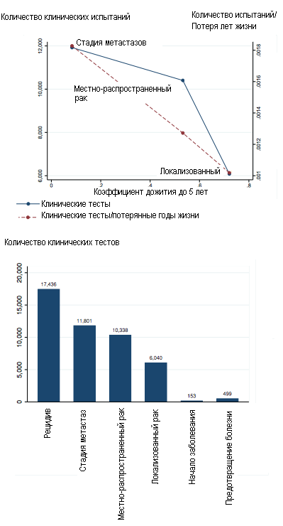
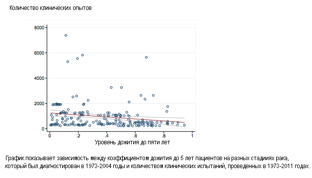

http://www.finmarket.ru/z/nws/hotnews.asp?id=3283463
Патенты убивают: защита интеллектуальной собственности мешает бороться с раком и другими болезнями
Бостон. 29 марта. FINMARKET.RU - Право собственности на научную разработку - краеугольный камень инновационной экономики. Закон защищает его, чтобы корпорации могли вкладывать миллиарды долларов в исследования, а потом имели возможность вернуть их, реинвестировать прибыль в новые исследования и немного заработать на хлеб.
Так выглядит теория, но в реальности все совсем не так. Срок действия большинства патентов, выдаваемых в США, - 20 лет, и этот срок предопределяет выбор направления научных исследований, которые будут получать финансирование.
Фактически, корпорации выбирают не те направления, где может произойти настоящий прорыв, а те, где срок клинических испытаний будет меньше, а период монопольного владения рынком - больше.
То, что ими движет именно такая мотивация, доказали Хейди Уильямс из Массачусетского технологического университета, Эрик Будиш из Университета Чикаго и Бенджамин Роин из Юридической школы Гарварда которые исследовали, как патенты влияют на развитие инноваций. Для примера они взяли рынок разработок лекарств от рака. Уильямс до этого изучила рынок исследований генома человека.
Вывод в обеих работах один и тот же: защита интеллектуальных прав приводит к сокращению инноваций и мешает корпорациям финансировать прорывные фармакологические исследования.
Как патенты мешают бороться с раком
Прежде всего ученые создали модель, которая описывает нынешнее положение дел в создании лекарств от рака. Модель учитывает, что:
- Фирма не может рисковать, запатентовать продукт нужно на стадии разработки, потом это сделать будет невозможно.
- Процесс инноваций включает в себя временной лаг между разработкой лекарства и его коммерциализацией.
- Патенты разрабатываются так, чтобы они были эффективны для монопольного использования продукта.
- Технология должна иметь более длительный период использования, чем срок патента.
- Как только патент истечет, технологию можно будет легко копировать.
Конкуренция в отрасли высокая, а значит, компания должна подать заявку на патент еще во время исследований. Когда нужная формула уже найдена, требуются клинические испытания, которые могут длиться годами - их результаты компания должна представить регулятору. При этом срок действия патента - 20 лет - не продлевается, то есть в течении этих 20 лет компания должна провести все тесты, наладить промышленное производство лекарства, выпустить его не рынок и получить прибыль. В итоге получается, что чем дольше будут длиться клинические испытания, тем невыгодней инвестировать в лекарство.
В случае с раком это работает так.
- Компаниям выгодно разрабатывать лекарства для лечения рака на поздних стадиях, и при этом невыгодно инвестировать в лечение первых стадий болезни, потому что испытания могут продлиться в течении нескольких лет, может быть, даже в течении всего срока действия патента. Клинические испытания одного из препаратов для лечения рака простаты на стадии метастаз длились 3 года: медианный срок продолжительности жизни составлял 12,8 месяцев, благодаря лекарству он увеличивался на 3,9 месяцев.
- Клинические испытания лекарства от рака простаты на ранних стадиях продолжались 18 лет: в среднем пациенты жили на девять лет дольше после обнаружения болезни, а благодаря лекарству их продолжительность жизни возрастала еще больше.
- Но в такие исследования компаниям просто невыгодно вкладывать деньги, ведь патент будет действовать всего 2 года после начала продаж лекарства. Финансирование таких исследований ложится на плечи государства и благотоворительных фондов.
Чтобы изучить это явление, экономисты разработали простую теоретическую модель. Процесс инновации в ней разбивается на две стадии: сама инновация, то есть создание прототипа, поиск технологий и т.п., а также коммерциализация - на этой стадии компания получает разрешение на производство продукта, начинает массовое производство и внедряет новый товар на рынок.
Эта модель может показать, как именно влияет срок подачи заявки на патент, а также величину лага между разработкой и коммерциализацией на инвестиции. Влияние оказалось положительным: чем выше временной разрыв, тем ниже объем инвестиций. Таким образом, патенты с фиксированным сроком разрушают рынок медицинских исследований.
Чем больше человек проживет, приняв лекарство, тем меньше его болезнь хотят исследовать
Чтобы доказать отрицательное воздействие патентов на медицинские исследования, Уильямс и ее коллеги исследовали испытания препаратов для лечения различных типов раковых заболеваний на различных стадиях. Статистка по этим препаратам и исследованиям доступна, кроме того, сейчас в США обычно выявляют рак на ранних стадиях, поэтому часто известна вся история болезни пациентов.
- Инвестиции в исследования и разработку лекарств от заболеваний с более продолжительном сроком дожития меньше. Это связано с более длительным этапом на пути к коммерциализации.
- В среднем пациенты с раком на стадии метастаз лишь в 10% случаев могут прожить еще 5 лет. На них уже проведено 12 тысяч клинических исследований.
- Пациенты с опухолью, которая не дала метастазы, в среднем в 70% случаев проживают 5 лет. За последние годы проведено лишь 6 тысяч клинических исследований препаратов для них.
- Было проведено 17 тысяч испытаний лекарств для лечения рецедивного рака - пациенты с этим заболеванием имеют ничтожно низкие шансы выжить.
- Испытаний препаратов для предотвращения появления опухоли было проведено всего 500.
Чем выше срок дожития, тем меньше испытаний

Таким образом, патентное законодательство напрямую связано с отсутствием прогресса в этой области. Именно из-за фиксированного срока патентов компании не хотят браться за разработку лекарств, предотвращающих рак. Срок действия патента - единственная причина отказа от тех или иных исследований, стоимость исследований не влияет на принятие решения об их финансировании.
Срок дожития напрямую влияет на инвестиции

Как можно решить эту проблему
Так как патенты с фиксированным сроком явно мешают прогрессу, экономисты предложили несколько способов решения проблемы. Их проверили статистически и оказалось, что все они работают.
- Можно изменить дизайн патентов. Патент будет действовать с момента коммерциализации продукта, а не с момента его разработки - это даст фирмам зарабатывать в течение более длительного времени.
- В случаях, когда испытания длятся очень долго, поможет продление периода действия патента. В принципе, можно сделать сроки патентов более гибкими.
- Временный разрыв между исследованиями и коммерциализацией во многом зависит от того, до какой стадии излечения надо проводить исследования. Чаще всего срок наблюдений зависит от естественного течения болезни и государственного регулирования. Можно установить фиксированные точки, на которых исследования можно сворачивать, например, для лекарства от гипертонии - это понижение давления. Для лейкимии такой точкой может служить определенное изменение клеток крови.
- Помочь могут и целевые субсидии исследований с длительным сроком клинических испытаний. Все просто: если частному сектору, невыгодно что-либо финансировать - это может сделать государство.
Неэффективность патентного законодательства убивает
В США в 2009 году 25% смертей были связаны с раковыми заболеваниями. Большая доля лишь у сердечно-сосудистых болезней.
- Экономисты подсчитали, сколько человеческих жизней унесла неэффективность патентного законодательства.
- Они проанализировали, каково было бы состояние системы, если бы с 1973 по 2011 годы никакого прогресса в лечении раковых заболеваний не было бы.
- Среди больных с небольшим сроком дожития разницы не будет.
- Среди больных с более высоким сроком дожития будет заметна разница среди больных гематологическим раком, например, лейкемией и другими видами рака. Инвестиции в первый более прибыльны, так как их эффективность оценивается по различным отметкам, а не уровню дожития.
- На основе этой разницы экономисты построили график: разрыв в двух линиях - это жизни, потерянные из-за проблем с законодательством.
- Если учесть всех пациентов, которым диагностировали рак в США в 2003 году, из-за неэффективности патентного законодательства было потеряно 890 человеколет жизни.
- Если перевести человеческие жизни в деньги, то потери для экономики составили $89 млрд.
Неэффективность патентного законодательства хуже, чем война

Патенты мешают прогрессу
Уильямс в своей более ранней работе попыталась ответить на вопрос, , влияют ли патенты и различные законы о копирайте на другие инновации. Для этого она изучила исследования генома человека.
- Компания Celera владеет правом собственности на результаты расшифровки генома человека, она завершила свои исследования чуть раньше, чем был завершен международный некоммерческий проект "Геном человека". Предположим, что Pfizer изобрела уникальный тест на поиск какой-либо болезни, для тестирования которого нужно исследование генома и выявление соответствующих маркеров, ассоциированых с этим недугом.
- В идеальном мире компании бы начали переговоры и договорились о совместных тестах. Но в реальном мире с высокими транзакционными издержками переговоры зайдут в тупик и инновации никогда не будет произведены.
- Международный проект по исследованию генома человека был начат в 1990 году и закончен в 2003 году. Celera начала свое исследование в 1999 году и закончила в 2001 году.
- С 2001 по 2003 годы Celera имела право на защиту генов, которые она открыла. Тогда компания могла продавать лицензии на их разработку.
- Право собственности Celera привело к значительному сокращению исследований и разработок в этой сфере. К 2009 году на каждый ген, открытой Celera, приходилось 1,2 публикации, а на остальные - 2,1 публикации.
- Лишь 3% генов Celera были использованы в различных диагностических тестах против 5,4% генов, не принадлежащих Celera.
- Различные тесты показывают: тот факт, что Celera "владела правом на гены", сократило исследования и разработки на 20-30%.
29/03/2013